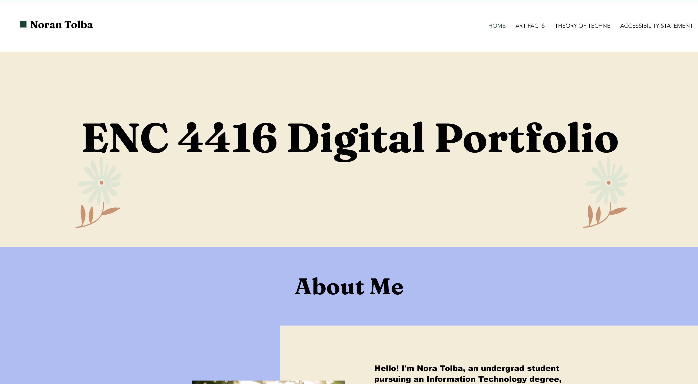

Digital Portfolio

Project Description
In this project, I created a digital portfolio for my English class to summarize everything I learned throughout the semester.
Skills Learned
- Website Accessibility: I learned how to use "alt text" on images so that people who are blind or have low vision can still understand all the content on my site.
- Building a Website: I learned how to use Wix to design and launch a professional-looking digital portfolio to show off my work.
- User-Friendly Design: I practiced organizing my information and menus so that visitors can easily find what they are looking for without getting confused.